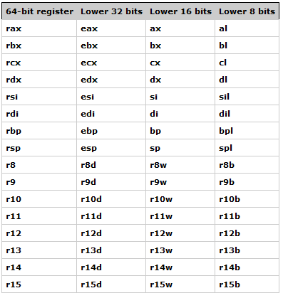
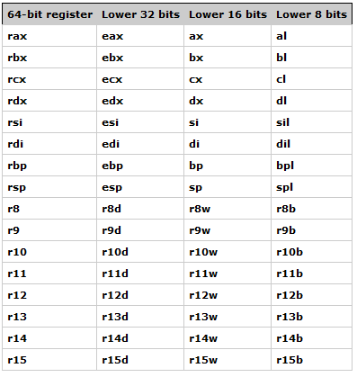
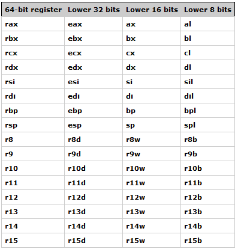

mov eax, ebx: move the value in ebx into eax
mov eax, [ebx]: move the 4 bytes in memory at the address contained in EBX into EAX
mov [var], ebx: move the contents of EBX into the 4 bytes at memory address var. (Note, var is a 32-bit constant).
mov eax, [esi-4]: move 4 bytes at memory address ESI + (-4) into EAX
mov [esi+eax], cl: move the contents of CL into the byte at address ESI+EAX
mov edx, [esi+4*ebx]: move the 4 bytes of data at address ESI+4*EBX into EDX
mov byte ptr [var], 5: move the value 5 into the byte at location var
mov al, [my_arr+3]: move the forth element of the array into register al
push operand: place the operand onto the top of stack in memory
pop operand: remove the element from the top of the stack into the operand
lea operand1, operand2: place the address in operand2 into operand1
add operand1, operand2: add operand1 and operand2, storing the result in operand1
sub operand1, operand2: subtract operand2 from operand1, storing the result in operand1
and operand1, operand2: perform AND on operand1 and operand2, storing the result in operand1
or operand1, operand2: perform OR on operand2 and operand1, storing the result in operand1
shl operand1, operand2: shift the bits in operand1 left, storing the result in operand1
shr operand1, operand2: shift the bits in operand1 right, storing the result in operand1
C++: func1(int a, int b, int c, int d, int e, int f);
Assembly: a in RCX, b in RDX, c in R8, d in R9, f then e pushed on stack
Example: Add 2 and 3
mov eax, 2
mov ebx, 3
add eax, ebx
Example: Print hello world
.data
hello db "Hello World!",0
.code
hello_from_asm PROC
push rbp
mov rbp, rsp
sub rsp, 32 ; Shadow Space
and spl, -16 ; Align stack at 16
lea rcx, hello
call puts
leave ; Restore stack (rsp) & frame pointer (rbp)
ret
hello_from_asm ENDP
END
